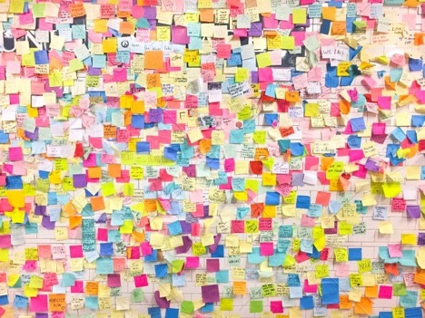
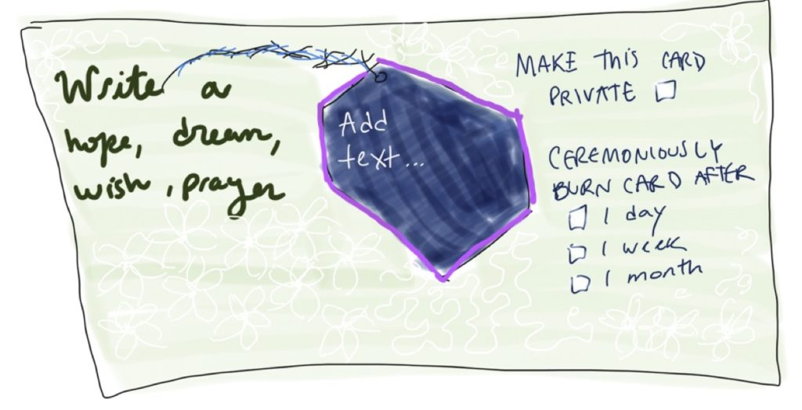
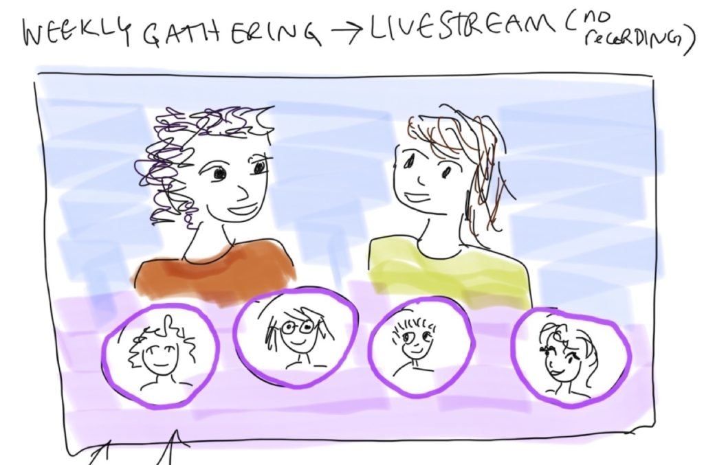
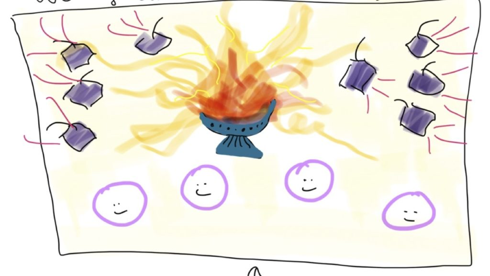
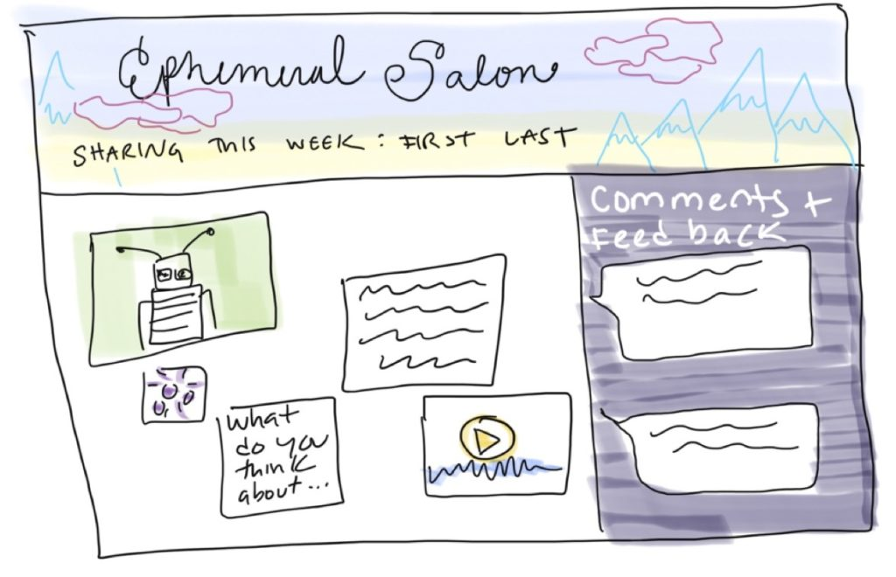
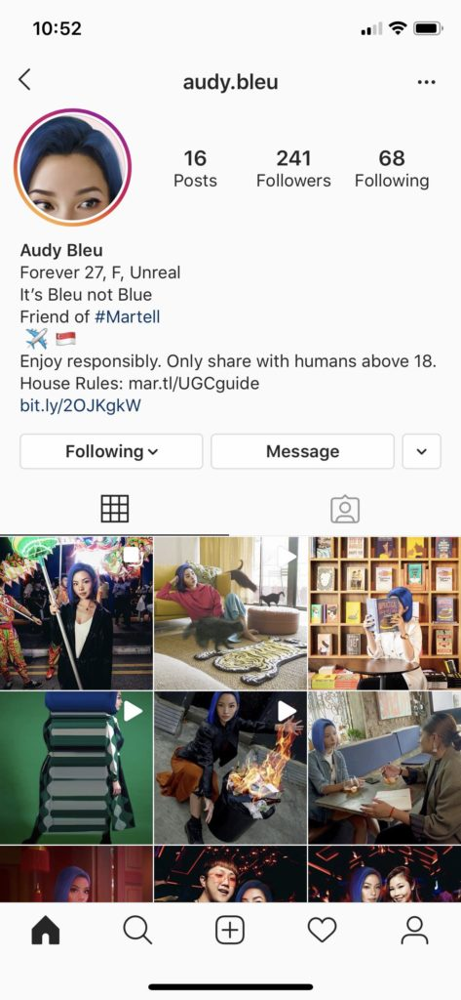

The Temple to the Cyborg Goddess is a sacred space online for diverse technologist artists to gather and share ideas about visions for the future of media. The space steps outsides dominant frameworks of social media design by embracing various forms of engagement not driven by profit and attention. Community activities include livestream gatherings, interactive virtual exhibits, and other forms of collective building and imagining.
 A space to write and post intentions, hopes, dreams. These are ephemeral.
Writing a new note for the Wall of Intentions.
Weekly Ritual (livestream gathering)
Weekly gatherings could be book discussions, concerts, panels, etc.Cards from the Wall of Intention will be virtually “burned” at the weekly gathering.
Ephemeral Salon
Members can post in-progress work and ideas and get feedback
Thirty-five years ago, scholar Donna Haraway released a paradigm-shifting text: The Cyborg Manifesto. Within it, she questions the boundaries we have fashioned in the material world–animal and man, man and machine, physical and nonphysical. She explores how our shared imaginary can expand to include femininity in the realm of technology. Radical thinkers, artists, and feminists have rallied around and carried forward these ideas. Our project aims to hold space for them by exploring the following questions through online platform design:
How might we hold space for creativity online?
How might we think about technology outside patriarchal and capitalist frameworks?
How might we build a platform that is antithetical to the dominant logics of extractive design?
With these questions in mind, we propose to erect a Temple to the Cyborg Goddess: a digital sacred space that does not ask visitors and members to endlessly scroll but rather, visit, ambiently explore and intentionally congregate around ephemeral online moments. We wish to provide a balm to the unhealthy practices of design driven by profit. The Temple will have an explicit zero tolerance policy for bigotry and hate speech of any kind that will be strongly enforced to make it a safe space for all.
Hindu temple (Pathirakali Amman Temple in Trincomalee, Sri Lanka)
The Temple will contain a Sanctuary, Gallery and Vision Wall. The Sanctuary will be a space of congregation with events scheduled at a regular weekly interval, much like a Sunday service. The Gallery will be a monthly rotation of artists’ works around a changing theme. The Vision Wall, inspired by the walls and trees of fortune telling paper in Japanese Shinto shrines, is a space to anonymously share hopes, dreams, fears and ideas.
Fortune telling paper at Japanese Shinto Shrine
An exciting aspect of this project is that we cannot foretell who our community will include. We are rallying around the imaginary of the Cyborg Goddess and expecting that it will draw a range of people familiar with and inspired by the concept. We plan to gain momentum by working with an initial group of artists to form the Cyborg Goddess Guild.
We draw inspiration from museums as sacred and creative spaces
We envision The Guild it to be a community of artists, thinkers, futurists and dreamers who together hold space to imagine how technology fits into a world that rises above neoliberal capitalist impulses and fights for deep connections, frivolous wandering, ambient appreciation, and far-reaching questions.
We prefer to build a subscription model to sustain the site rather than using advertising. Just like physical sacred space is open to everyone, we will have public programming and open days to visit the Temple site.
Miquela Sousa (@lilmiquela), Shudu (@shudu.gram), and Audy Bleu (@audy.bleu) are social media bots, but not the kind made by the thousands to bestow large quantities of likes on divisive posts. They are carefully crafted CGI characters, two of whom were assumed to be human before their creators opened up about their origin. They are most active on Instagram, although Miquela also releases music available on Spotify. They are also influencers. As of this writing, Miquela has 2 million Instagram followers and over 300,000 monthly listeners on Spotify, Shudu has 200,000 Instagram followers, and Audy Bleu has 200 Instagram followers. In addition to producing content, they are socially interactive, responding to comments and on occasion doing “interviews” with journalists. Virtual influencers are more than just pretty pictures; they are part of the social fabric of the web. How does this affect the health of our online communities? Can virtual influencers be valuable community members, or are they destroying something uniquely human? I argue that bots can contribute to a healthy community when they are honest about their non-human status, fall closer to artistic statements than capitalist emissaries, thoughtfully engage with human identity markers such as race and identity, and encourage discussion between human community members.

In this article I draw on an investigation of the Instagram accounts of virtual influencers including Miquela, Shudu, and Audy Bleu as well as the ones listed in the table below. I review their posts, comments below posts, and followers. I also do a discourse analysis of numerous online articles about the influencers and their creators (see References section).
Name
Instagram
Followers
Creator
Country
Year
Miquela Sousa
@lilmiquela
2 million
Brud
USA
2016
Bermuda
@bermudaisbae
221,000
Brud
USA
2016
Blawko
@blawko22
158,000
Brud
USA
2018
Shudu
@shudu.gram
200,000
Cameron James-Wilson (now The Diigitals)
UK
2017
Audy Bleu
@audy.bleu
200
Martell (alcohol brand)
Singapore
2019
War Nymph
@warnymph
73,800
Grimes (musician)
USA
2020
Hatsune Miku
@mikuhatsune
82,200
Crypton Future Media
Japan
2007
Colonel Sanders
@kfc
1.6 million
Kentucky Fried Chicken
USA
2019
Friends and colleagues often display mild disgust towards the idea of following a bot on social media. I will argue here that virtual community members are not in and of themselves problematic, but they are problematic when masquerading as an actual human. As one reporter remarked, “Shudu is notable for being post-uncanny valley, appearing so human that most people, even with a closer look, wouldn’t suspect that she’s CGI.” (“Shudu, the First Digital Supermodel” 2018) The creators of both Shudu and Miquela initially hid their origins. One of Shudu’s early images, in which she is wearing Rhianna’s beauty brand Fenty, went viral and threw the fashion world into a frenzy trying to uncover her identity. Slowly, Shudu’s creator Cameron James-Wilson came forward saying that it was an art project (“Shudu, the First Digital Supermodel” 2018). He faced both enthusiasm and backlash, much of it centered around whether a white British man should be allowed to create an African digital model (“Photographer Gets Accused Of Racism” 2018).
Brud,
the company behind Miquela, Bermuda, and Blawko, went a step further. They released
both Miquela and Bermuda in 2016 without any explanation or link to Brud. Miquela,
the 19-year-old musician, became particularly popular and garnered hundreds of
thousands of followers who presumably believed she represented a human. In
April 2018, Brud staged a faux online drama in which Bermuda “took over”
Miquela’s account and deleted all her photos, saying that she needed to tell
the world the truth. After fanning the internet flames, Brud stepped forward as
the creator of both Miquela and Bermuda, and people realized the entire episode
had been a carefully curated scam to generate attention (Petrarca 2018). The
internet community was angry, but Miquela has continued to gather followers and
has over 2 million to date.
Both
Shudu and Miquela’s introduction to the world upset their online community.
People felt betrayed and lied to. Now that their identities are out in the
open, people are able to reconnect as they see fit. It allows for the honest
evaluation of a relationship with a robot instead of one founded on deceit. In
a world where Facebook deactivates Native American’s accounts because their
names don’t sound “real” and refuses to let humans choose their own gender
identity (Haimson & Hoffmann 2016), it feels ironic that virtual avatars
can now masquerade as real humans on social media platforms. While they may be
valuable contributors in their own ways, they clearly shouldn’t be equated with
human communication partners.
In
addition to being honest about their human-ness, virtual community members,
like human influencers, should be open about their commercial and brand affiliations.
Lifelike bots fall on a spectrum between serving artistic needs and serving
capitalist needs. It matters for the health of the community which end of the
spectrum a bot falls on, and how honest they are about their purpose. Bots such
as Colonel Sanders, who the internet described as Kentucky Fried Chicken’s “hot”
logo, and Audy Bleu, who represents the alcohol company Martell, both embody a
brand. Kentucky Fried Chicken was completely open about Colonel Sanders and
promoted him via their Twitter and Instagram pages (Wright 2019). Audy Bleu’s
Instagram profile is more covert but reads “Friend of #Martell” and includes a
link to Martell’s website. Cameron James-Wilson claims, on the other hand, that
Shudu is an art project. Shudu does occasionally partner with brands, but this
is always very clear in the post comments and James-Wilson says in an interview
from 2018, “I don’t really see Shudu as a money spinner or a business for me. It’s
more of an expression, and when I’ve had companies approach me, if what they
want doesn’t reflect in what I see for her then it’s a no go. You know it
doesn’t matter about the money or things like that. Because it’s not why I
started Shudu. I started her for me, to express myself.” (“Shudu, the First
Digital Supermodel” 2018)
What lies in between
openly embodied brands and art is murkier, and I argue, more problematic. Human
influencers already face this issue to some extent: how to be authentic while
taking money from brands to promote certain products. Virtual influencers face
the same problem, but it is messier when the influencer is not actually
represented by a single human being. Brud’s Miquela, Bermuda, and Blawko
clearly fall into this category. Brud’s website claims that it is “a transmedia
studio that creates digital character driven story worlds” (“💖
website_copy_wip_for_all_my_qtz 💖” n.d.). However,
it has recently raised $20 to $30 million from venture capital firms, and the
business model seems to be advertising (Shieber 2019). Miquela has already
posted pictures promoting brands like Calvin Klein and Prada. I argue that while
similar to a human influencer, this is more problematic for digital
influencers. At the end of the day, a human influencer has some degree of
agency. This may be limited due to financial constraints, brand pressure, or
other factors but it doesn’t disappear completely. If a human feels like something
is truly wrong and has a platform with millions of followers, they have the
capacity to speak out. A virtual avatar does not. Virtual influencers can be
bent in any way a brand desires without putting up a fight. It is for this
reason that virtual community members like Miquela who claim to be art but
function as capitalist mouthpieces are highly unhealthy for online communities.
Openly embodied brands do not hold great potential for helping a community, but
they are less damaging than covert marketing machines. On the flip side, virtual
community members who strongly limit advertising or steer clear of it entirely and
are honest about their non-personhood can be intriguing and fun, in the way
fantasy characters have been in novels and stories for far longer than the
internet has existed.
Like
story characters before them, social media bots must also contend with issues
of human identity, such as race and gender. While many robots, like Amazon Alexa
and Google Home, are notorious for evading questions of race and gender, virtual
influencers must engage with these to some degree because of their hyper-realistic
imagery. Miquela says she is half-Brazilian, half-Spanish (Boshier 2020).
Bermuda is Caucasian and blonde. Shudu’s creator cites Princess of South Africa
Barbie as his inspiration for the dark-skinned supermodel (B 2019). Audy Bleu has
been dubbed Singapore’s first virtual influencer (Thiyagarajan 2020). Hatsune
Miku is Japanese (Wikipedia). They are all women. The only male virtual
influencers I came across were Blawko, made by Brud, and Colonel Sanders of KFC.
Blawko always wears a mask obscuring the lower half of his face. Colonel
Sanders is Caucasian.
It
matters how virtual character’s identity is designed and displayed since this
can either foster an inclusive community or hurt particular groups of real humans.
Digital assistant’s front of “neutrality” (despite obvious predilections
towards white, female identities) seems to stem from the idea that an “unraced”
technology will fit into everyone’s homes. Virtual influencers take a decidedly
different approach, recognizing that online communities reflect distinct
cultures, in which race and gender are a factor. Using identities to celebrate
diversity can lift up communities, but using identities, particularly
marginalized identities, to sell products is harmful. In one of Miquela’s
Instagram posts, she says “I’m not sure I can comfortably identify as a woman
of color. ‘Brown’ was a choice made by a corporation. ‘Woman’ was an option on
a computer screen. My identity was a choice Brud made in order to sell me to
brands, to appear ‘woke.’ I will never forgive them. I don’t know if I will
ever forgive myself. There it is for the digital universe to feast upon: an
unabashed staging of diversity without the actual presence of people of color.”
This post is surprisingly self-critical and shows Brud grappling publicly with
Miquela’s identity. It is perhaps a form of apology to the outraged internet
over their lies about her origin. Despite the soul searching, though, Brud continues
to use Miquela as a marketing tool. As Rosa Boshier writes for Bitch Media:
In “Feeling Ancestral,” an essay that appears in the 2015 anthology Racial Feelings: Asian America in a Capitalist Culture of Emotion, Santa Ana writes that “the commodification of racial mixture allows us to feel the euphoria of consuming social change while simultaneously forgetting our melancholic past.” Miquela’s easily digestible version of mestizaje offers a glimpse into an alternative universe where implication and culpability don’t exist, erasing any trace of colonial violence and historical oppression. As a simulated influencer with an ever-growing following and brands behind her, ready to pay for access to a relatable, oppressed queer young woman of color without having to actually work with queer women of color, Miquela espouses vague messages about equality while simultaneously commodifying social progress for capital gain. Miquela represents only one example of how we have given ourselves permission to give up. (Boshier 2020)
Brud also makes Bermuda, a highly
sexualized Caucasian woman who supports Trump. It seems clear that one company
cannot authentically hold two such opposing viewpoints; the only reason to do
so is to engage different marketing demographics for material gain.
Shudu,
on the other hand, while engendering some upset over the fact that she was
produced by a white man (“Photographer Gets Accused Of Racism” 2018), has, I
argue, contributed positively to discussions about diversity in fashion.
Cameron James-Wilson says in an interview, “Just the same as in many industries,
the 3D world is sorely lacking ethnic diversity and black characters and assets
are particularly rare. There’s a push to shift this, and with the advancement
of tech and 3D industries, we can expect a change. But it’s one thing that
Shudu is contributing to in her own way. It wasn’t something intentional from
the start, but now I’m very interested in helping to create the resources
needed for game developers and 3D designers to make more diverse characters.” (“Shudu,
the First Digital Supermodel” 2018) In Shudu’s most recent Instagram post, she
is seen with real-life model Alexandra-Maleek who looks like her twin. Shudu
also wears clothing and jewelry by Black designers and links to their Instagram
pages. In doing so, Shudu is able to highlight human talent that may be
otherwise marginalized in the fashion world.
This
brings me to my last point, which is that in order for virtual influencers to
contribute to healthy communities, they should engage in healthy communication
with humans. One disturbing trend I noticed, primarily on Miquela’s posts, was
the number of conversations between bots. Constructive community is built
through human-human communication, which bots can facilitate but not replace. As
noted above, Shudu links to real models and designers, bringing them into
conversation with each other. When Bermuda and Miquela exchange a string of
comments, it may be briefly entertaining, but it is not substantive. Hatsune
Miku, a Japanese virtual singer originally released in 2007, almost a decade
before the US-based bots, has constructed a vibrant community around her
persona. Hatsune Miku holds physical concerts around the world using a
projection of her avatar, but she does not play her own music. Instead, she
performs thousands of songs written by fans using software that mimics her
voice. Hatsune Miku’s fans share songs and fan art with each other, often riffing
off each other’s work. Hatsune Miku gathers people and provides a starting
point for connection (Wikipedia). It is important that humans connect through
robots, and that robots do not simply create a world for themselves.
This is the comment section of Miquela’s post. @lilmiquela, @bermudaisbae and @audy.bleu are all bots.
The diversity of virtual influencers shows us that they cannot be cast off as all good or all bad. The implementation matters. If done well, virtual influencers can be valuable members of a community. In this scenario, they are honest about their non-human status, tend towards art over advertising, handle their adopted identity with grace, and facilitate connection between humans. If done poorly, they can cause upset and feelings of betrayal as well as actual harm to marginalized communities. In the worst case, they profit off of the bodies of people who have historically been oppressed and facilitate bot-bot conversations as a way to gain followers. I am hopeful we can push for a world that includes wonderful, interactive robots who delight and connect us and that don’t exist to sell us products.
References
💖
website_copy_wip_for_all_my_qtz 💖. (n.d.). Brud.
Retrieved March 29, 2020, from https://docs.google.com/document/d/1V5N5tcfm7wBuUshgrmIOz9ijAO-VRqvkUbGRu0uKdI8/edit?usp=embed_facebook
B, S. (2019,
December 28). 5 Cool CGI Influencers You Should Follow on Instagram. Beebom.
https://beebom.com/cool-cgi-influencers-instagram/
Boshier, R.
(2020, January 28). Lil Miquela Is a
Queer Woman of Color. Too Bad She Isn’t Real.Bitch Media. https://www.bitchmedia.org/article/who-is-lil-miquela-racial-implications-of-simulated-influencers-of-color
Gorsler, F.
(2018, February 5). Meet Fashion’s
First Virtual Instagram Influencer: Lil Miquela. High Snobiety. https://www.highsnobiety.com/p/lil-miquela-virtual-influencer-instagram/
Hatsune Miku.
(2020). In Wikipedia. https://en.wikipedia.org/w/index.php?title=Hatsune_Miku&oldid=947415485
Hiatt, B.,
& Hiatt, B. (2020, March 5). Grimes: Live From the Future. Rolling Stone.
https://www.rollingstone.com/music/music-features/grimes-rolling-stone-digital-cover-960843/
Hidrėlėy.
(2018). Photographer Gets Accused Of Racism After His Perfect Black Model
‘Shudu’ Gets Instagram Famous. Bored Panda. https://www.boredpanda.com/3d-black-model-shudu-cameron-james-wilson/
Holmes, E.
(2018, July 2). Do Avatars Make the
Perfect Influencers? ELLE. https://www.elle.com/culture/a21272102/almost-human-july-2018-miquela-shudu-profile/
Katz, M.
(2018, May 1). CGI ‘Influencers’ Like Lil Miquela Are About to Flood Your
Feeds. Wired. https://www.wired.com/story/lil-miquela-digital-humans/
Lil Miquela.
(2020). In Wikipedia. https://en.wikipedia.org/w/index.php?title=Lil_Miquela&oldid=947002032
Morency, C.
(2018, February 5). Meet Fashion’s
First Computer-Generated Influencer. Business
of Fashion. https://www.businessoffashion.com/articles/intelligence/meeting-fashions-first-computer-generated-influencer-lil-miquela-sousa
Petrarca, E.
(2018, April 18). A Pro-Trump Troll
Hacked Instagram’s Favorite Virtual Influencer. The Cut. https://www.thecut.com/2018/04/lil-miquela-hack-instagram.html
Princess
of South Africa Barbie Doll. (n.d.). Retrieved March 29, 2020, from https://barbie.mattel.com/shop/en-us/ba/barbie-dolls-of-the-world/princess-of-south-africa-barbie-doll-56218
Remsen, N.
(2016, May 2). Riccardo Tisci Gives
Japan’s Biggest Virtual Virtuoso an Haute Couture Makeover. Vogue. https://www.vogue.com/article/riccardo-tisci-hatsune-miku-haute-couture-makeover-avatar
Shieber, J.
(2019, January 14). More investors are betting on virtual influencers like Lil
Miquela. TechCrunch. http://social.techcrunch.com/2019/01/14/more-investors-are-betting-on-virtual-influencers-like-lil-miquela/
Shudu, the
First Digital Supermodel: What You Need to Know. (2018, March 5).
Highsnobiety. https://www.highsnobiety.com/p/shudu-digital-supermodel/
Soul
Machines—Changing the Face of AI. (n.d.). Soul Machines. Retrieved March
28, 2020, from https://www.soulmachines.com/
Thiyagarajan,
D. (2020, February 10). Inside The Mind Of Singapore’s First Virtual
Influencer, Audy Bleu. RICE. https://www.ricemedia.co/culture-people-singapore-first-virtual-influencer-audy-bleu/
Wright, M.
(2019, April 13). KFC unveils hot CGI
“virtual influencer” as their new Colonel Sanders. Mail Online. https://www.dailymail.co.uk/news/article-6918277/KFC-unveils-hot-virtual-influencer-Colonel-Sanders-recipe-tattoo-chiseled-ab.html
I discovered a temporal quality to my media consumption. Above, I show word clouds for different parts of my day along with the corresponding media I use. Larger font size correlates with higher use. I also couldn’t help the urge to Instagram-ify the media chart as a kind of meta-commentary about creating media about our media. I specifically chose to use “millennial pink” and plants in the final piece and ran the photo through the Juno Instagram filter.
Written after an assignment to not use your phone for 24 hours
We live in an age in which we are all cyborgs (see e.g. Haraway 2015). While we may not have implants (although a growing number of us now endure orthodontics or are aided by pins, staples, or pacemakers), our phones are, for all intents and purposes, an extension of our bodies. They may be physically glued to our hands, strapped to our wrists or our arms, or in a pocket or bag so intimately close that we can feel the notification vibrations. Sometimes we, myself included, feel that vibration when it isn’t there, like a phantom phone limb. This state of being is often decried by the public as undesirable and even dangerous, the critiques purporting a kind of Romantic era back-to-nature sentiment, as if we could just rewind to a pre-cyborgian “natural” state of being. But I happen to like my cyborg self and spending 24 hours without my phone in my default world (i.e. not on a remote island without internet or electricity, which I have done, and it was a wonderful experience for other reasons) was challenging in interesting ways.
The first thing I noticed was a loss of certain abilities my cyborg self usually thinks nothing of. For example, when I was grocery shopping and couldn’t remember if we had eggs and capers at home, I couldn’t call my husband to check. I bought both, and now we have one set of eggs but two jars of capers. Later in the evening I did a load of laundry, which is in the basement of my building. I usually set a timer on my phone so I know when it’s done, and ended up resorting to the oven timer. I also lost my rapid access to information. Checking the weather to see how many layers to wear and what hours UPS was open took a little longer since I had to pull out my laptop. Finally, I noticed myself making a mental list of people I wanted to message about small things that didn’t seem worthy of an email: telling my mom I made one of our favorite foods, asking a friend to have dinner, getting photos from my sister’s weekend trip. Little interactions that aren’t life-altering but important for maintaining relationships especially when friends and family are scattered around the world. And sometimes there are bigger things–I specifically didn’t start this assignment until recently because last week an older family member had a bad fall and went to the hospital. At that point I needed to be in touch.
But what about the addiction and mindless scrolling we so often hear about? Instagram is the only form of social media I use regularly, and I do at times find myself scrolling through photos of mountains, cozy interiors, and street style. There are moments when I do this on purpose, and there are moments when I just pick up my phone while waiting in line and, all of a sudden, I realize I’m on Instagram. Although there is a lot of social pressure to feel guilty about this, I try not to. I enjoy the social media accounts I follow. I did find, though, that my 24-hour break lessened my, at times, unconscious instinct to reach for my phone. I ended up adjusting some of my notifications in order to decrease this instinct a little further. I am happy to conceptualize my phone as part of my physical self, but it should tell me when it actually needs my attention.
I strongly
dislike the term addiction in this context because I think it is extremely
disrespectful towards people who have medical addictions that can destroy their
lives, such as an opioid or alcohol addiction. A better phrase is
“automaticity” (see e.g. LaRose 2010), or the idea that picking up
your phone can be an automatic habit, but this does not constitute an addiction
in the medical sense because it doesn’t significantly alter your life in a
negative way. Another way to think about the difference between looking up
directions on Google Maps and scrolling on Instagram is “Uses and
Gratifications Theory” (UGT). UGT separates media consumption into two
categories: instrumental and ritualized. Instrumental consumption is
goal-oriented, often with the aim of collecting a specific piece of
information. Ritualized consumption is more passive and habitual, gratifying
“companionship, entertainment, personal identity, escape” (Joo and Sang 2013).
Joo and Sang (2013) and Hiniker, Patel, Kohno, and Kientz (2016) each document
how smartphone uses can be separated into instrumental and ritualized uses.
What I find
particularly interesting is trying to understand where the massive guilt from
ritualized smartphone use comes in. Like diet fads, people put themselves
through all sorts of digital detoxes, similar to the one we did for this
assignment (see e.g. Baym, Wagman, and Persaud, in press). Adam Alter, author
of Irresistible: The Rise of Addictive Technology and the Business of
Keeping Us Hooked, makes a comment in a New York Times interview that sums
up many of the complaints we often hear: “If you’re on the phone for three
hours daily, that’s time you’re not spending on face-to-face interactions with
people. Smartphones give everything you need to enjoy the moment you’re in, but
they don’t require much initiative. You never have to remember anything because
everything is right in front of you. You don’t have to develop the ability to
memorize or to come up with new ideas.” However, I can think of numerous
ways my phone has enhanced my in-person relationships, especially with people
who live far away from me, as well as enabled my creativity.
While I think an “always-on”
mentality can be punishing at times and that we need both technical mechanisms for
controlling our smartphone usage in ways that make us feel empowered as well as
social norms that allow for delayed responses, I think we can tackle these
problems while fully embracing our cyborg state of being.
References
Baym, Nancy, Kelly
Wagman, and Christopher Persaud. In press. “Mindfully Scrolling: Rethinking
Facebook After Time Deactivated.” Social
Media and Society.
Dreifus, Claudia. 2017. “Why We Can’t Look Away From Our Screens.” The New York Times.
Haraway, Donna. 2015. Simians, Cyborgs, and Women: The
Reinvention of Nature. London: Routledge.
Hiniker, Alexis,
Shwetak N. Patel, Tadayoshi Kohno, and Julie A. Kientz. 2016. “Why Would You Do
That? Predicting the Uses and Gratifications Behind Smartphone-Usage
Behaviors.” In Proceedings of the 2016 ACM International Joint Conference on
Pervasive and Ubiquitous Computing, 634–645. UbiComp ’16. New York, NY,
USA: ACM. https://doi.org/10.1145/2971648.2971762.
Joo, Jihyuk, and
Yoonmo Sang. 2013. “Exploring Koreans’ Smartphone Usage: An Integrated Model of
the Technology Acceptance Model and Uses and Gratifications Theory.” Computers
in Human Behavior 29 (6): 2512–2518. https://doi.org/10.1016/j.chb.2013.06.002.